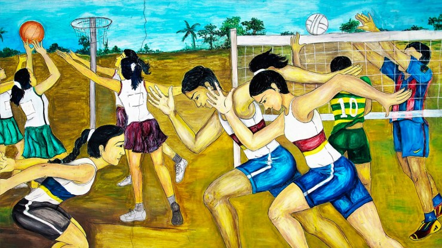
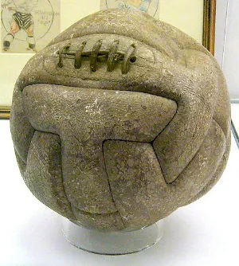
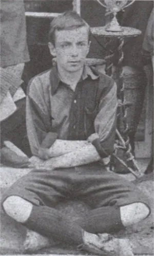
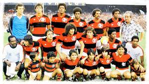
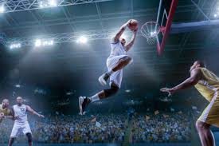
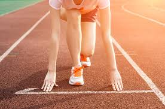
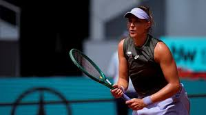
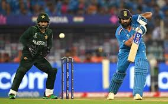

História e origem dos Esportes
Você aí com certeza já jogou algum esporte. Hoje em dia, os esportes fazem parte da vida de muita gente. Jogando futebol, assistindo ele na TV ou praticando atividade física. Mas você sabe como os esportes surgiram? Os esportes existem há muito tempo, desde as civilizações antigas. Naquela época, eles eram usados para diversão, treinamento e competições entre povos. Os esportes mudaram muito ao longo do tempo e ganharam regras diferentes em cada lugar.
O esporte é qualquer atividade física realizada por 1 pessoa ou mais, com regras e objetivos. Eles surgiram a muitos, Muitos, MUITOS anos e evoluíram ao longo do tempo.

Você tem alguma noção de quando o Esporte surgiu? É difícil dizermos com certeza sobre a origem dos esportes. Dizem que o Esporte surgiu há muitos anos atrás, o que deixa difícil saber a data para esse acontecimento. Há quem diga que o esporte vem da sobrevivência dos povos antigos, quando para sobreviver precisavam lutar, correr, saltar, lançar objetos, praticar o arco e flecha, nadar e etc..., e hoje possuem modalidades esportivas. No passado,algumas atividades, que hoje são consideradas esportes, eram ligadas aos rituais e práticas religiosas.
Alguns indícios sobre o início da realização de alguns esportes
Por volta de 1850 a.C., foi descoberto no Egito, na 9 Necrópole de Beni-Hassan, um mural com imagens que mostravam a luta em vários movimentos. Na Irlanda ocorreram arremessos em 1830 a.C. e salto em altura em 1160 a.C. Há indícios dos primeiros esquiadores são apontados na Noruega e dos primeiros remadores e pescadores na Rússia.
Alguns outros indícios
Em 1500 a.C., em Creta, praticava-se o pugilismo. Em 1300 a.C. a 800 a.C. já havia o jogo da pelota. Homero, em 1200 a.C., faz versos para retratar os Jogos Fúnebres, no Canto XXIII da Ilíada. Em 776 a.C. nascem os Jogos Olímpicos gregos, com importância grande local , que depois passam a ser o próprio calendário, pois eram disputados de quatro em quatro anos. As primeiras "corridas de fundo", com 4 mil metros e 164 centímetros, são disputadas em 720 a.C. A luta e o pentatlo (corrida, disco, luta, salto em distância e dardo) estão nos Jogos de 708 a.C. Em 648 a.C. existe o puligismo, e, em 632 a.C. ocorrem as competições para menores de idade (16 a 18 anos) e as corridas de quadrigas.
Fique ainda mais por dentro da história dos esportes com este vídeo:
Esportes na atualidade: Evolução com os anos e impactos na sociedade
Os esportes fazem parte da vida de todas as pessoas. Hoje em dia, eles estão presentes no nosso dia, assistindo partidas, praticando atividades ou acompanhando atletas nas redes. O esporte virou um espaço de conexão, emoção e inspiração para todas as pessoas.
A importância dos esportes não é só ajudar a saúde física e mental, mesmo sendo o principal benefício. Praticar esportes ajuda a melhorar o bem estar mental, tira estresse e ajuda as pessoas a terem uma rotina mais equilibrada e saudável.
Evolução dos Esportes
Com o passar do tempo, os esportes também evoluíram bastante. A tecnologia trouxe muitas mudanças, como o uso de ferramentas como o var (no futebol), analisadores de desempenhos (em vários esportes) e outros. Novas modalidades também ganharam espaço, como os campeonatos de esportes eletrônicos (e-sports).
Outro ponto em que o esporte se destaca é a inclusão. Ele está se tornando um espaço aberto para todos, sem se importar com o gênero, condição física e financeira, local onde vivem ou nasceram e nem sua cor de pele. Isso é muito bom para o esporte e para a sociedade.
Esporte é mais que uma atividade, é também uma paixão
O esporte é algo que une a paixão pela atividade física de várias pessoas ao redor do Mundo. No Brasil e no mundo, a popularidade de um esporte é medida pela quantidade de fãs, audiência de televisão e pela quantidade de pessoas que o praticam.
A popularidade dos esportes é notada com as super competições mundiais, como a Copa do Mundo e as Olimpíadas, que chamam atenção de todos e fazem as pessoas se interessarem pelo esporte. Sobre popularidade, o futebol é o rei e se destaca de forma special, pois para muitas pessoas ele é mais do que um jogo, mas sim é também uma paixão, um estilo de vida, um hobby special, e com toda certeza vale a pena conhecermos um pouco mais sobre a história do futebol.
História do Futebol: Surgimento de um Fenômeno
Assim como nos esportes, não sabemos o ano em que o futebol surgiu. Historiadores contam que os ingleses tinham o costume de chutar uma bola de couro, símbolo da cabeça de um membro do exército rival (Exército da Dinamarca), comemorando a expulsão dos dinamarqueses. Esse costume era feito uma vez por ano, mas esse hábito ficou famoso, e passou a ser realizado mais vezes. Os jogos não tinham regras, e era permitido qualquer tipo de agressão para vencer, o que acabava ferindo muitos dos jogadores. Com as consequências, o Rei Eduardo II proibiu os jogos, com medo da perda dos soldados do seu exército. A prática foi proibida, e, em 1681, os jogos com a bola voltaram a ser permitidos na Inglaterra.

O Crescimento de um Fenômeno
Com os anos, os torneios ficaram populares, e isso ajudou o futebol a se organizar melhor. Em 1863, criaram a Football Association (FA), uma organização que definiu as primeiras regras do esporte. Depois disso, o futebol começou a ter fama, e as partidas oficiais e os campeonatos passaram a acontecer com mais vezes. Esses campeonatos foram importantes porque aumentaram as partidas de futebol pelo mundo. O esporte foi crescendo pelo mundo inteiro. Na década de 1870, o futebol foi praticado pela classe trabalhadora da Inglaterra. Muitos donos de fábricas incentivavam os funcionários a montarem times e irem para os torneios. Isso fez o futebol deixar de ser algo da elite e virar um esporte popular para todos.
Brasil: Local onde o futebol se consolidou
O futebol chegou ao Brasil em 1894 com um homem chamado Charles Miller, que chegou em São Paulo depois de terminar os estudos, trouxe bolas e regras para as pessoas jogarem e se divertirem com o futebol aqui no país.

O futebol ficou famoso no Brasil, e logo já existiam mais de 100 clubes. O esporte se tornou febre, e o país se destacou no mundo vencendo 5 vezes a Copa do Mundo.
O crescimento do futebol no Brasil fez o remo, que era o mais famoso (e que na minha opinião é muito, MUITO chato), ser esquecido. Isso fez com que algumas equipes de remo virassem clubes de futebol, como o Flamengo, Vasco e Botafogo.
Ranking dos Clubes Brasileiros com as Maiores Torcidas
| Clubes | 1º Flamengo | 2º Corinthians | 3º Palmeiras | 4º São Paulo | 5º Vasco da Gama |
| Porcentagem de Torcedores | 21,2 % | 11,9 % | 6,5 % | 6,4 % | 3,4 % |
Sessão Clubismo: Clube de coração do autor
O clube de coração do autor (eu mesmo) é o Flamengo (Nova Iguaçu também, tamo junto Flávia!!), um dos clubes mais vitoriosos do Brasil. O clube de Regatas do Flamengo foi fundado em 1895 sendo uma das várias mudanças dos clubes de remo para o futebol. É o maior vencedor brasileiro da Libertadores, com 4 títulos, tem 9 Braileirões, 5 Copas do Brasil, 1 Mundial de Clubes e etc... além disso também tem uma das maiores torcidas do mundo.

Sessão Clubismo: Curiosidades sobre o maior ídolo deste time e o clube Nova Iguaçu
O maior ídolo do Flamengo é Zico, um dos maiores jogadores da história do futebol brasileiro. Zico (seu nome completo é Arthur Antunes Coimbra), nasceu em 1953 e foi muito importante para o Flamengo e jogou quase toda sua vida no clube. Zico é considerado um dos maiores jogadores de todos os tempos e é um SUPER ÍDOLO para o Flamengo, mas ele também é importante para o surgimento de um outro clube: Nova Iguaçu (Olha o nosso time aí Flávia!!).

A história do Nova Iguaçu Futebol Clube (ou Laranja Mecânica do Rio, forma que é chamado pelos fãs) vem de vontade de algumas pessoas que queriam levar o esporte pra Baixada Fluminense (local no estado do Rio de Janeiro). Entre estas pessoas estão Zico e Zinho, grandes jogadores da época. Fundado em 1990, o clube surgiu querendo investir nas categorias de base e dar oportunidades a jovens atletas da região e de lugares pobres no estado.

Fique abaixo com algumas curiosidades sobre esta rica história sobre os esportes
- Os Jogos Olímpicos da Antiguidade começaram na Grécia por volta de 776 a.C. e eram realizados em homenagem aos deuses, especialmente Zeus.
- Muitos esportes modernos têm origem em adaptações de jogos antigos; o futebol, por exemplo, surgiu a partir de diversas práticas semelhantes em diferentes culturas.
- O basquete foi criado em 1891 por um professor de educação física que buscava uma atividade para ser praticada em ambientes fechados durante o inverno.
- O vôlei também surgiu como uma alternativa menos intensa ao basquete, sendo criado poucos anos depois, em 1895.
- Com o passar do tempo, as regras dos esportes foram sendo padronizadas, o que permitiu a criação de competições oficiais e ligas organizadas.
- Atualmente, além dos esportes tradicionais, os esportes eletrônicos (eSports) ganharam espaço e já são considerados uma nova forma de competição
E você, quais dos 5 esportes mais populares do mundo você gosta? Marque abaixo

Futebol

Basquete

Atletismo

Tênis
